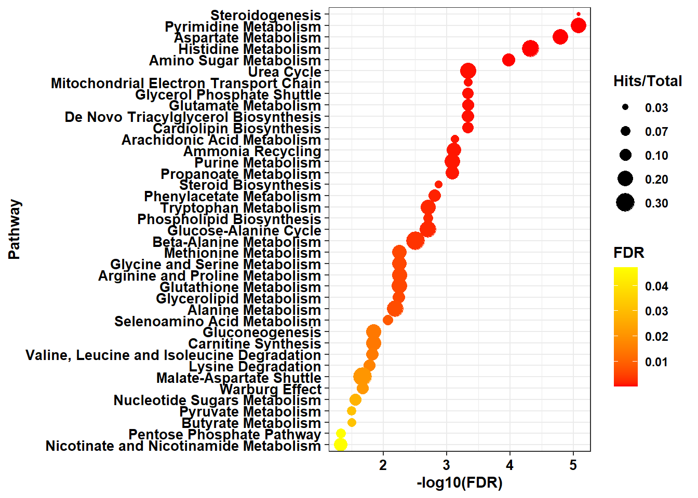

Section 5 Functional Enrichment
Description: This pipeline generates dot plot visualizations for the enriched pathways. The results can be obtained from applying either Metabolite Set Enrichment Analysis (MSEA) or Over-Representation Analysis (ORA) performed on the MetaboAnalyst online platform.
Project Initialization:
#Sets the working directory and creates subfolders for organizing outputs.
mypath= "C:/Users/USER/Documents/Github/CRC_project/"
dir.create("output")
dir.create("plots")
dir.create("input")#Load libraries
library(tibble)
library(plyr)
library(dplyr)
library(tidyverse)
library(openxlsx)
library(cowplot)
library(ggplot2)# The enrichment was applied using Metaboanalyst online website
# load enrichment results
enrich_table = read.csv(paste0(mypath,"input/enrichment_table.csv"))
colnames(enrich_table)## [1] "new_pathway_name" "Total.Cmpd" "Hits" "Statistic.Q"
## [5] "Expected.Q" "Raw.p" "Holm.p" "FDR"
## [9] "fold_enrichment" "P.adj.FDR.log" "signif"5.1 Data Preparation
# add necessary columns for plotting
#enrich_table$fold_enrichment <- enrich_table$hits /enrich_table$total
enrich_table$fold_enrichment <- enrich_table$Hits /enrich_table$Total.Cmpd
#enrich_table$fold_enrichment <- round(enrich_table$fold_enrichment,2)
enrich_table$FDR.log <- -log10(enrich_table$FDR)
enrich_table$signif <- ifelse(enrich_table$P.adj.FDR.log >= -log10(.05), "sig", "non")
table( enrich_table$signif) ##
## sig
## 39# adjust pathway names
colnames(enrich_table)[1] <- "new_pathway_name"
enrich_table$new_pathway_name= gsub("%.*", "", enrich_table$new_pathway_name)
# remove duplicated pathways
enrich_table <- enrich_table[!duplicated(enrich_table$new_pathway_name),]
# plot only significant pathways
enrich_table <- enrich_table[enrich_table$signif== "sig",]5.2 Enrichment plot
plot1 <- ggplot(data=enrich_table, aes( y = reorder(new_pathway_name, FDR.log),
x = FDR.log,
size = fold_enrichment,
color = FDR )) +
geom_point() +
scale_size_continuous(guide = guide_legend(order = 2), breaks = c( 0.03, 0.07, 0.1, 0.2, 0.3)
) +
scale_color_gradient(low = "red", high = "yellow", name = "FDR") +
#breaks = c(min(enrich_table$FDR), 0.25,0.50, 0.75, max(enrich_table$FDR)),
#labels = c( round(min(enrich_table$FDR),2), 0.25, "0.50", 0.75, round(max(enrich_table$FDR),2))) + # Customize the color scale
labs(size = "Hits/Total") +
xlab("-log10(FDR)") +
ylab("Pathway") +
theme_bw() +
theme(legend.position="right", text = element_text(face="bold"),
axis.text = element_text(color = "black", face = "bold")) +
theme(axis.text = element_text(color = "black", face = "bold", size = 10))
print(plot1)
## R version 4.4.1 (2024-06-14 ucrt)
## Platform: x86_64-w64-mingw32/x64
## Running under: Windows 10 x64 (build 19045)
##
## Matrix products: default
##
##
## locale:
## [1] LC_COLLATE=English_United States.utf8
## [2] LC_CTYPE=English_United States.utf8
## [3] LC_MONETARY=English_United States.utf8
## [4] LC_NUMERIC=C
## [5] LC_TIME=English_United States.utf8
##
## time zone: Africa/Cairo
## tzcode source: internal
##
## attached base packages:
## [1] grid stats graphics grDevices utils datasets methods
## [8] base
##
## other attached packages:
## [1] ggrepel_0.9.6 viridis_0.6.5 fields_16.2
## [4] viridisLite_0.4.2 spam_2.10-0 biomaRt_2.61.2
## [7] ComplexHeatmap_2.21.0 circlize_0.4.16 RColorBrewer_1.1-3
## [10] memoise_2.0.1 caret_6.0-94 lattice_0.22-6
## [13] pls_2.8-3 Rserve_1.8-13 MetaboAnalystR_3.2.0
## [16] cowplot_1.1.3 DT_0.33 openxlsx_4.2.6.1
## [19] lubridate_1.9.3 forcats_1.0.0 stringr_1.5.1
## [22] purrr_1.0.2 readr_2.1.5 tidyr_1.3.1
## [25] ggplot2_3.5.1 tidyverse_2.0.0 dplyr_1.1.4
## [28] plyr_1.8.9 tibble_3.2.1
##
## loaded via a namespace (and not attached):
## [1] splines_4.4.1 filelock_1.0.3 bitops_1.0-7
## [4] hardhat_1.4.0 pROC_1.18.5 rpart_4.1.23
## [7] httr2_1.0.2 lifecycle_1.0.4 edgeR_4.3.5
## [10] doParallel_1.0.17 globals_0.16.3 MASS_7.3-60.2
## [13] scrime_1.3.5 crosstalk_1.2.1 magrittr_2.0.3
## [16] limma_3.61.5 plotly_4.10.4 sass_0.4.9
## [19] rmarkdown_2.27 jquerylib_0.1.4 yaml_2.3.10
## [22] zip_2.3.1 DBI_1.2.3 maps_3.4.2
## [25] zlibbioc_1.50.0 BiocGenerics_0.52.0 nnet_7.3-19
## [28] rappdirs_0.3.3 ipred_0.9-15 GenomeInfoDbData_1.2.12
## [31] lava_1.8.0 IRanges_2.38.1 S4Vectors_0.42.1
## [34] listenv_0.9.1 ellipse_0.5.0 parallelly_1.38.0
## [37] codetools_0.2-20 xml2_1.3.6 RApiSerialize_0.1.3
## [40] tidyselect_1.2.1 shape_1.4.6.1 UCSC.utils_1.1.0
## [43] farver_2.1.2 BiocFileCache_2.13.0 matrixStats_1.3.0
## [46] stats4_4.4.1 jsonlite_1.8.8 GetoptLong_1.0.5
## [49] multtest_2.61.0 e1071_1.7-14 survival_3.6-4
## [52] iterators_1.0.14 systemfonts_1.2.3 foreach_1.5.2
## [55] progress_1.2.3 tools_4.4.1 ragg_1.3.2
## [58] Rcpp_1.0.13 glue_1.7.0 gridExtra_2.3
## [61] prodlim_2024.06.25 xfun_0.46 GenomeInfoDb_1.41.1
## [64] crmn_0.0.21 withr_3.0.0 fastmap_1.2.0
## [67] caTools_1.18.2 digest_0.6.36 timechange_0.3.0
## [70] R6_2.5.1 textshaping_0.4.0 colorspace_2.1-1
## [73] Cairo_1.6-2 gtools_3.9.5 RSQLite_2.3.7
## [76] generics_0.1.3 data.table_1.15.4 recipes_1.1.0
## [79] class_7.3-22 prettyunits_1.2.0 httr_1.4.7
## [82] htmlwidgets_1.6.4 ModelMetrics_1.2.2.2 pkgconfig_2.0.3
## [85] gtable_0.3.5 timeDate_4032.109 blob_1.2.4
## [88] siggenes_1.79.0 impute_1.79.0 XVector_0.44.0
## [91] htmltools_0.5.8.1 dotCall64_1.1-1 bookdown_0.40
## [94] fgsea_1.31.0 clue_0.3-65 scales_1.3.0
## [97] Biobase_2.64.0 png_0.1-8 gower_1.0.1
## [100] knitr_1.48 rstudioapi_0.16.0 tzdb_0.4.0
## [103] reshape2_1.4.4 rjson_0.2.21 curl_5.2.1
## [106] nlme_3.1-164 proxy_0.4-27 cachem_1.1.0
## [109] GlobalOptions_0.1.2 KernSmooth_2.23-24 parallel_4.4.1
## [112] AnnotationDbi_1.67.0 pillar_1.11.0 vctrs_0.6.5
## [115] gplots_3.1.3.1 pcaMethods_1.97.0 stringfish_0.16.0
## [118] dbplyr_2.5.0 cluster_2.1.6 evaluate_0.24.0
## [121] magick_2.8.4 cli_3.6.3 locfit_1.5-9.10
## [124] compiler_4.4.1 rlang_1.1.4 crayon_1.5.3
## [127] future.apply_1.11.2 labeling_0.4.3 stringi_1.8.4
## [130] BiocParallel_1.39.0 munsell_0.5.1 Biostrings_2.72.1
## [133] lazyeval_0.2.2 Matrix_1.7-0 hms_1.1.3
## [136] glasso_1.11 bit64_4.0.5 future_1.33.2
## [139] KEGGREST_1.45.1 statmod_1.5.0 highr_0.11
## [142] qs_0.26.3 igraph_2.0.3 RcppParallel_5.1.8
## [145] bslib_0.8.0 fastmatch_1.1-4 bit_4.0.5